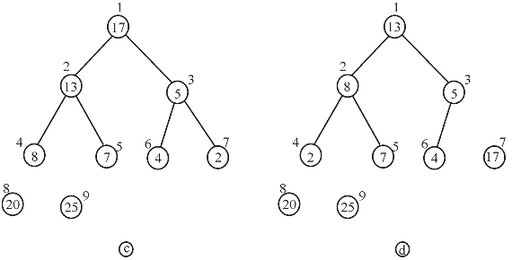
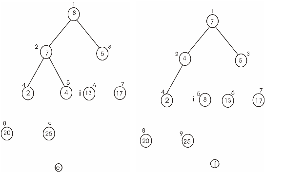
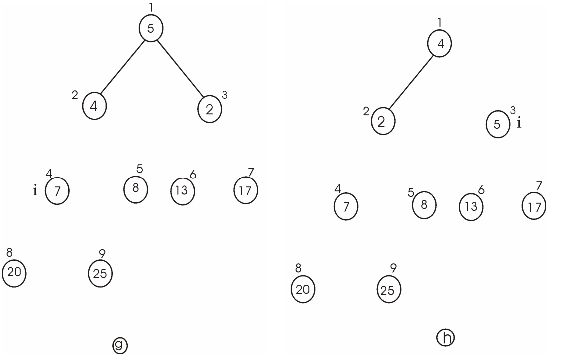
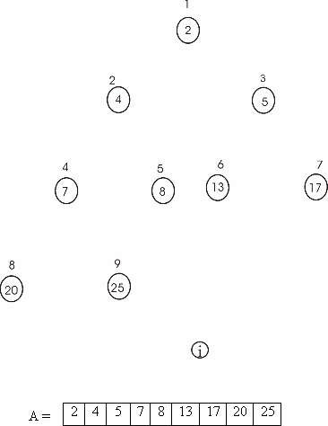

Heap sort is the comparison based approach to sort the data. It is based on the heap data structure.
Build the max heap from the initial data.
• Store the largest element at the root of the heap.
• Now replace this element with the last element of heap and decrease the heap size by one.
• Then heapify the tree root.
• Repeat the above steps till the size of heap is greater than one.
A loop invariant is referred to the condition which is essentially true instantly before and after the every iteration of the loop.
Consider the HEAPSORT algorithm given in the section 6.4, chapter 6 of the textbook to prove the correctness of HEAPSORT using the provided loop invariant.
Loop invariant condition:
At each iteration starting, the subarray A[1… i] is the max-heap which contain the smallest element i of the array and subarray A[i+1 … n] contains the n-i largest element of the sorted array A.
Initialization:
Before the for loop starts, i is equal to length of the array n (that is i=n). Thus the claim about the sorting is true.
Maintenance:
Now suppose that the loop invariant holds at starting point of iteration i and it holds at the starting of iteration i-1.
• At the starting of iteration i, the subarray A[1 … i] is max-heap that holds the i smallest element of the array A[1 … n]. The another subarray A[i+1 … n] holds the n-i largest element of the A in sorted order.
• Now during the iteration i, key of A[1] is swapped with the key of A[i]. Decrease the size of heap to i-1. As the largest element of the max-heap is placed as root, element A[1] was the largest element in heap at the starting of iteration and it is located at position A[i].
• Thus at the completion of iteration i, subarray A[i…n] store n-i-1 largest element of A in the sorted order. When the MAXHEAPIFY(A, 1) is called in iteration i, subtree of A[1] exist at the root of max-heap because only moved element was placed at the root of max-heap which exist at the starting of that iteration.
Thus algorithm MAXHEAPIFY at the starting of iteration i-1 produces the subarray A[1….i-1] which is the max-heap that contains i-1 smallest element of A and is in sorted order. So the algorithm is correct.
Termination:
At the termination, the value of i will be 2. The subarray A[1…2] is the trivial max heap which is containing smallest element of A and subarray A[2…n] holds the n-1 largest element of A in the sorted order.
Hence the complete array is in sorted order and algorithm produces a sorted array and it is correct.
Consider the procedure BUILD-MAX-HEAP(A) as presented in figure 6.3 in the textbook.
The procedure MAX-HEAPIFY(A) as presented in figure 6.2 in the textbook.
Running time of heap sort in increasing order:
• The data structure first builds the heap tree for the given array A elements using the procedure BUILD-MAX-HEAP(A) and then calls the procedure MAX-HEAPIFY(A)to convert the tree into the maximum heap tree.
• When the input array A is already sorted in increasing order, heap sort takes time.
• Each of the  call to
MAX-HEAPIFY(A) takes time.
call to
MAX-HEAPIFY(A) takes time.
• Even though the elements of the array are sorted in an increasing order, the tree must convert into the array back and then into a heap and sort it again.
Running time of heap sort in decreasing order:
• When the input array is already sorted in a decreasing order, then also the heap sort takes time.
• Each of the call to
MAX-HEAPIFY takes time.
• The heap will be built in linear time as the elements of the array are in a decreasing order.
• Every time the procedure BUILD-MAX-HEAP(A)is called the maximum element is removed, and then the MAX-HEAPIFY procedure is called to sort in the decreasing order.
Thus, the maximum running time of heap sort is.
Heap sort sorts elements in an array or list. It is a comparison–based sorting algorithm. It belongs to selection sort family.
Consider a decision tree of height h and n elements. As there are n elements, n! permutations are possible. The tree must have at least n! leafs.
Thus, ……(1)
Taking logarithms on both sides of equation (1),
……(2)
As per Stirling’s approximation, the logarithmic function is a monotonically increasing function.
Therefore,
Take logarithm on both sides.
Hence, the worst-case running time of heap sort is .